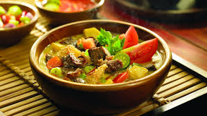

Resep Soto Betawi

Soto Betawi adalah sajian khas Jakarta yang kaya akan cita rasa gurih dan creamy. Dibuat dari kuah santan atau susu yang dimasak bersama rempah-rempah seperti lengkuas, serai, jahe, dan kayu manis, soto ini menghadirkan aroma harum yang menggugah selera.
Isian utamanya terdiri dari potongan daging sapi atau jeroan yang empuk, disajikan dengan kentang goreng, tomat, daun bawang, emping, dan kadang disertai sambal serta jeruk limau sebagai pelengkap.
Rasa gurih, lembut, dan sedikit manis dari kuahnya menjadikan Soto Betawi sebagai comfort food yang cocok disantap kapan saja, terutama di saat cuaca dingin atau saat rindu akan masakan rumah.
Bahan Utama
500 gram daging sapi (bisa campur dengan paru, babat, atau hati sapi sesuai selera)
2 lembar daun salam
2 batang serai (geprek)
3 cm lengkuas (geprek)
2 lembar daun jeruk
1 liter santan cair
500 ml susu cair (opsional, bisa diganti santan kental)
Garam, gula, dan kaldu bubuk secukupnya
Minyak untuk menumis
Bumbu Halus
6 siung bawang merah
4 siung bawang putih
3 butir kemiri
1 sdt merica
1 sdt ketumbar
½ sdt jintan (opsional)
1 ruas jahe
1 ruas kunyit
Cara Membuat:
Rebus daging:hingga empuk, lalu potong-potong dan sisihkan. Air rebusan bisa disaring untuk dijadikan kaldu.
Tumis bumbu halus:bersama daun salam, daun jeruk, serai, dan lengkuas sampai harum dan matang.
Masukkan tumisan bumbu ke dalam panci berisi kaldu, tambahkan santan dan susu cair.
Masukkan daging kembali, lalu masak dengan api kecil sambil diaduk sesekali agar santan tidak pecah.
Tambahkan garam, gula, dan kaldu bubuk sesuai selera.
Masak hingga kuah mengental dan beraroma sedap.
Sajikan panas dengan pelengkap seperti kentang goreng, emping, tomat, sambal, dan jeruk limau.